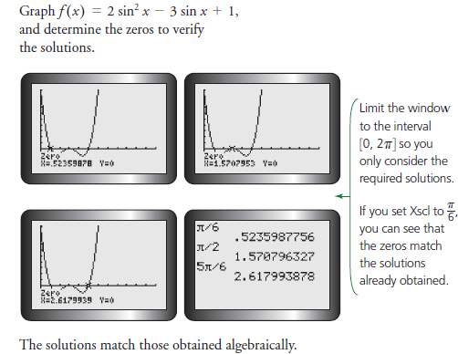

Solving Linear and Quadratic Trigonometric Equations
Because of their periodic nature, trigonometric equations have an infinite number of solutions. When we use a trigonometric model, we usually want solutions within a specified interval.
Selecting a Strategy To Determine The Solutions For a Linear Trigonometric Equation
You are given the equation 2 sin x + 1 = 0, 0 ≤ x ≤2π.
a. Determine all the solutions in the specified interval.
b. Verify the solutions using graphing technology.
Solution

Using an algebraic strategy to determine the approximate solutions for a linear trigonometric equation
Solve 3(tan θ + 1) = 2, where 0° ≤ θ ≤ 360°, correct to one decimal place.
Solution

Selecting a Factoring Strategy To Solve Quadratic Trigonometric Equation
Solve each equation for x in the interval 0 ≤ x ≤ 2π. Verify your solutions by graphing.
a.
b.
Solution
